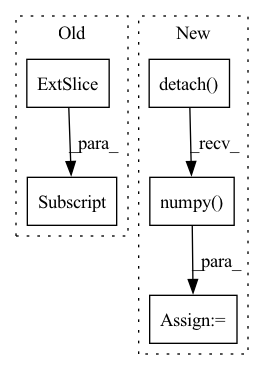

Pattern ID :23138
Before Change
spacing_raw = img_sitk.GetSpacing()
spacing = [spacing_raw[2], spacing_raw[1], spacing_raw[0]]
img_np = np.asarray(img_np, np.float32)
img_np = img_np[18:38, 63:183, 93:233]
msk_np = np.zeros_like(img_np, np.float32)
msk_np[10][60][70] = 1.0
msk_np = 1.0 - msk_np
After Change
img_np, msk_np, spacing, v=1e10, lamb=1.0, iter=2
)
dst1 = (
generalised_geodesic3d_raster_4scan_cpp(
image=img.to("cpu"),
mask=msk.to("cpu"),
spacing=spacing,
v=1e10,
lamda=1.0,
iter=2,
)
.squeeze_()
.detach()
.cpu()
.numpy()
)
dst2 = (
generalised_geodesic3d_raster_4scan_vectorised(
image=img.to("cpu"),In pattern: SUPERPATTERN
Frequency: 3
Non-data size: 5
Instances Fragment ID: 73104431
Project Name: masadcv/fastgeodis
Commit Name: 89652201af8fa40d457740fd68773304e38187f6
Time: 2021-06-16
Author: muhammad.asad@kcl.ac.uk
File Name: geodist3d.py
M Class Name: AnonimousClass
N Class Name: AnonimousClass
M Method Name: test_compare_original_imp(0)
N Method Name: test_compare_original_imp(0)
M Parent Class:
N Parent Class:
M File Name: geodist3d.py
N File Name: geodist3d.py
M Start Line: 271
M End Line: 272
N Start Line: 295
N End Line: 308
Before Change
out = torch.zeros(input.shape)
for k in range(3):
(grad_output * deriv_ao[:,k,:,:] ).sum(-1)
out[:,:,k] = (grad_output * deriv_ao[:,k,:,:]).sum(-1)
return out, None
After Change
@staticmethod
def backward(ctx, grad_output):
input = ctx.saved_tensors[0]
pos = input.detach().numpy() .astype("float64")
deriv_ao = torch.tensor([ctx.mol.eval_gto("GTOval_ip_sph",p) for p in pos])
print("GRAD OUT\n", grad_output)
print("DERIV AO\n", deriv_ao.shape) Fragment ID: 73104433
Project Name: nlesc-jcer/qmctorch
Commit Name: a3b2285e8153b66f9b42395f24162fd8c6c82c76
Time: 2019-05-14
Author: nicolas.gm.renaud@gmail.com
File Name: pyCHAMP/wavefunction/neural_pyscf_wf_base.py
M Class Name: AOFunction
N Class Name: AOFunction
M Method Name: backward(2)
N Method Name: backward(2)
M Parent Class: torch.autograd.Function
N Parent Class: torch.autograd.Function
M File Name: pyCHAMP/wavefunction/neural_pyscf_wf_base.py
N File Name: pyCHAMP/wavefunction/neural_pyscf_wf_base.py
M Start Line: 246
M End Line: 251
N Start Line: 302
N End Line: 311
Before Change
path = os.path.dirname(os.path.realpath(__file__))
i2p_aovals_ref = np.loadtxt(path + "/hess_ao_h2.dat")
print(i2p_aovals[:, 0, self.iorb] -i2p_aovals_ref)
assert np.allclose(
i2p_aovals[:, 0, self.iorb], i2p_aovals_ref)
After Change
i2p_aovals = self.wf.ao(
self.pos, derivative=2).detach().numpy()
ip_aovals = self.wf.ao(
self.pos, derivative=1).detach().numpy()
path = os.path.dirname(os.path.realpath(__file__))
i2p_aovals_ref = np.loadtxt(path + "/hess_ao_h2.dat")
Fragment ID: 73104432
Project Name: nlesc-jcer/qmctorch
Commit Name: d244fdd3192ef812f2eb5120e38efe9614cabd82
Time: 2020-06-04
Author: nicolas.gm.renaud@gmail.com
File Name: tests/test_ao_values.py
M Class Name: TestAOvalues
N Class Name: TestAOvalues
M Method Name: test_ao_hess(1)
N Method Name: test_ao_hess(1)
M Parent Class: unittest.TestCase
N Parent Class: unittest.TestCase
M File Name: tests/test_ao_values.py
N File Name: tests/test_ao_values.py
M Start Line: 60
M End Line: 65
N Start Line: 63
N End Line: 64